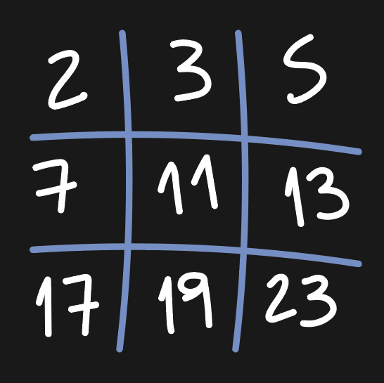
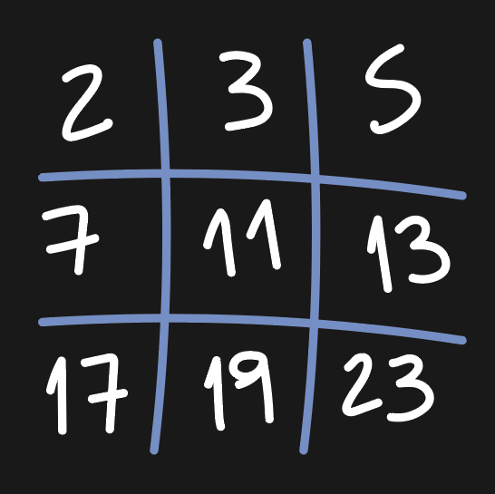

TaTeTi
2022 May 29
See all posts
TaTeTi
Una partida de TaTeTi, TicTacToe, tres en raya, etc. se finaliza
cuando:
- Un jugador consigue ubicar tres elementos en linea vertical,
horizontal o en diagonal.
- Se cubren todos los casilleros de una grilla de 3x3.
Supongamos que luego del movimiento de un jugador, obtenemos una
imagen, un estado de la grilla en juego. ¿Cómo se puede saber si la
partida ha finalizado?
En lo que sigue vamos a considerar las siguientes reglas:
- Elementos de la grilla.
- 0 : Seleccionadas por el jugador uno.
- 1 : Seleccionadas por el jugador dos.
- -1 : No seleccionadas.
- Resultados posibles.
- 0 : Partida finalizada, gana el jugador uno.
- 1 : Partida finalizada, gana el jugador dos.
- 2 : Partida finalizada, empate.
- 3 : Partida no finalizada.
- Suponemos que no conocemos el último movimiento realizado.
Desarrollo
Teoría de primos
Vamos a utilizar el teorema
fundamental de la aritmética para determinar si hay un ganador de la
partida.
Este teorema nos asegura que,
Todo entero positivo mayor que 1 es un número primo o bien un
único producto de números primos.
Por ejemplo,
\[
6936 = 2^3 \cdot 3 \cdot 17^2 \\
1200 = 2^4 \cdot 3 \cdot 5^2
\]
La clave es que no existe otra factorización en primos para estos
números.
Algoritmo
Pensemos ahora que tenemos la siguiente grilla,
vector<vector <int>> m ={
{1,0,1},
{0,0,1},
{0,1,0}
};
Es fácil ver que esta partida ha finalizado con empate, veamos el
caso de una partida finalizada
vector<vector <int>> m ={
{1,0,1},
{-1,0,-1},
{0,0,1}
};
En este caso se ve que el jugador uno (que coloca ceros) es el
ganador de la partida.
Asignemos ahora un número primo a cada celda de la grilla, esto
es

Así, a cada jugador vamos a poder asignarle un puntaje en base a la
celda que halla elegido, multiplicando el puntaje actual por el primo
que otorga la celda.
Implementemos esto en C++
int tateti(vector<vector<int> > m){
int resultado = 2;
int puntJugadorUno = 1;
int puntJugadorDos = 1;
vector<int> primos = {2,3,5,7,11,13,17,19,23};
// Asigno puntajes para cada jugador
for (int i = 0; i < m.size(); ++i) {
for (int j = 0; j < m[0].size(); ++j) {
if (m[i][j] == 0) {
puntJugadorUno *= primos[3*i+j];
} else if (m[i][j] == 1) {
puntJugadorDos *= primos[3*i+j];
} else {
resultado = 3;
}
}
}
Ahora, dado el estado de una grilla en juego, tenemos el puntaje que
tiene cada jugador, queda ver si hay algún ganador, o si la partida
todavía está en juego.
Acá es donde entra el teorema fundamental de la aritmética (TFA).
Sabemos que cualquier número positivo es producto único de primos. Por
lo tanto a cada una de las 8 jugadas ganadoras podemos asignarle el
producto de primos de las celdas que la forman.
- \(H1 = 2 * 3 * 5\)
- \(H2 = 7 * 11 * 13\)
- \(H3 = 17 * 19 * 23\)
- \(V1 = 2 * 7 * 17\)
- \(V2 = 3 * 11 * 19\)
- \(V3 = 5 * 13 * 23\)
- \(D1 = 2 * 11 * 23\)
- \(D2 = 5 * 11 * 17\)
Estos son los posibles escenarios ganadores. Por el TFA sabemos
entonces que hay un ganador de la partida si alguno de estos productos
divide al puntaje del jugador.
Lo implementamos,
// Verifico si hay ganador
vector<int> ganadores = {2*3*5, 7*11*13, 17*19*23, 2*7*17,
3*11*19, 5*13*23, 2*11*23, 5*11*17};
int i = 0;
while (i < ganadores.size() && (resultado == 2 || resultado == 3) ){
if (puntJugadorUno % ganadores[i] == 0) {
resultado = 0;
} else if (puntJugadorDos % ganadores[i] == 0) {
resultado = 1;
}
i++;
}
Resultado
Juntando ambos bloques de código que tenemos obtenemos,
int tateti(vector<vector<int> > m){
int resultado = 2;
int puntJugadorUno = 1;
int puntJugadorDos = 1;
vector<int> primos = {2,3,5,7,11,13,17,19,23};
vector<int> ganadores = {2*3*5, 7*11*13, 17*19*23, 2*7*17,
3*11*19, 5*13*23, 2*11*23, 5*11*17};
// Asigno puntajes para cada jugador
for (int i = 0; i < m.size(); ++i) {
for (int j = 0; j < m[0].size(); ++j) {
if (m[i][j] == 0) {
puntJugadorUno *= primos[3*i+j];
} else if (m[i][j] == 1) {
puntJugadorDos *= primos[3*i+j];
} else {
resultado = 3;
}
}
}
// Verifico si hay ganador
int i = 0;
while (i < ganadores.size() && (resultado == 2 || resultado == 3) ){
if (puntJugadorUno % ganadores[i] == 0) {
resultado = 0;
} else if (puntJugadorDos % ganadores[i] == 0) {
resultado = 1;
}
i++;
}
return resultado;
}
Test
Obtuvimos un programa que creemos verifica si existe un ganador en
una partida de TaTeTi, ¿Cómo podemos verificar que es correcto?
La técnica más utilizada en la actualidad es el testing que compara
el resultado esperado por el programa con el que efectivamente devuelve
este.
Veamos algunos casos de test para ver si el programa hace lo que
queríamos.
Para lo que sigue usamos la librería de Google Test
Casos de test o test cases
No buscamos probar en todos los posibles estados de una partida, ya
que deberíamos probar 5487
posibles escenarios.
Por lo tanto buscamos un conjunto de casos de test que sean
representativos del total de escenarios posibles.
No hubo movimientos
TEST(tateti, noHuboMovimientos){
vector<vector <int>> m={
{-1,-1,-1},
{-1,-1,-1},
{-1,-1,-1}
};
EXPECT_EQ(tateti(m), 3);
}
Empate
TEST(tateti, empate){
vector<vector <int>> m={
{1,0,1},
{0,0,1},
{0,1,0}
};
EXPECT_EQ(tateti(m), 2);
}
Partida no finalizada
TEST(tateti, noFinalizada){
vector<vector <int>> m={
{1,-1,-1},
{1,0,-1},
{0,-1,0}
};
EXPECT_EQ(tateti(m), 3);
}
Gana el jugador uno vertical
TEST(tateti, ganaUnoVertical){
vector<vector <int>> m={
{1,0,1},
{-1,0,-1},
{0,0,1}
};
EXPECT_EQ(tateti(m), 0);
}
Gana el jugador dos vertical
TEST(tateti, ganaDosVertical){
vector<vector <int>> m={
{1,-1,0},
{1,0,-1},
{1,-1,0}
};
EXPECT_EQ(tateti(m), 1);
}
Gana el jugador uno horizontal
TEST(tateti, ganaUnoHorizontal){
vector<vector <int>> m={
{1,-1,-1},
{0,0,0},
{0,1,1}
};
EXPECT_EQ(tateti(m), 0);
}
Gana el jugador dos horizontal
TEST(tateti, ganaDosHorizontal){
vector<vector <int>> m={
{0,-1,0},
{-1,0,-1},
{1,1,1}
};
EXPECT_EQ(tateti(m), 1);
}
Gana el jugador uno diagonal
TEST(tateti, ganaUnoDiagonal){
vector<vector <int>> m={
{0,-1,-1},
{1,0,-1},
{1,-1,0}
};
EXPECT_EQ(tateti(m), 0);
}
Gana el jugador uno al final
TEST(tateti, ganaUnoAlFinal){
vector<vector <int>> m={
{1,0,1},
{0,0,1},
{1,0,0}
};
EXPECT_EQ(tateti(m), 0);
}
Usando un compilador y tester podemos verificar que el programa
aprueba todos los test cases.
Por lo tanto determinamos que el programa es correcto respecto al
problema especificado.
TaTeTi
2022 May 29 See all postsUna partida de TaTeTi, TicTacToe, tres en raya, etc. se finaliza cuando:
Supongamos que luego del movimiento de un jugador, obtenemos una imagen, un estado de la grilla en juego. ¿Cómo se puede saber si la partida ha finalizado?
En lo que sigue vamos a considerar las siguientes reglas:
Desarrollo
Teoría de primos
Vamos a utilizar el teorema fundamental de la aritmética para determinar si hay un ganador de la partida.
Este teorema nos asegura que,
Por ejemplo,
\[ 6936 = 2^3 \cdot 3 \cdot 17^2 \\ 1200 = 2^4 \cdot 3 \cdot 5^2 \]
Algoritmo
Pensemos ahora que tenemos la siguiente grilla,
Es fácil ver que esta partida ha finalizado con empate, veamos el caso de una partida finalizada
En este caso se ve que el jugador uno (que coloca ceros) es el ganador de la partida.
Asignemos ahora un número primo a cada celda de la grilla, esto es

Así, a cada jugador vamos a poder asignarle un puntaje en base a la celda que halla elegido, multiplicando el puntaje actual por el primo que otorga la celda.
Implementemos esto en C++
Ahora, dado el estado de una grilla en juego, tenemos el puntaje que tiene cada jugador, queda ver si hay algún ganador, o si la partida todavía está en juego.
Acá es donde entra el teorema fundamental de la aritmética (TFA). Sabemos que cualquier número positivo es producto único de primos. Por lo tanto a cada una de las 8 jugadas ganadoras podemos asignarle el producto de primos de las celdas que la forman.
Estos son los posibles escenarios ganadores. Por el TFA sabemos entonces que hay un ganador de la partida si alguno de estos productos divide al puntaje del jugador.
Lo implementamos,
Resultado
Juntando ambos bloques de código que tenemos obtenemos,
Test
Obtuvimos un programa que creemos verifica si existe un ganador en una partida de TaTeTi, ¿Cómo podemos verificar que es correcto?
La técnica más utilizada en la actualidad es el testing que compara el resultado esperado por el programa con el que efectivamente devuelve este.
Veamos algunos casos de test para ver si el programa hace lo que queríamos.
Para lo que sigue usamos la librería de Google Test
Casos de test o test cases
No buscamos probar en todos los posibles estados de una partida, ya que deberíamos probar 5487 posibles escenarios.
Por lo tanto buscamos un conjunto de casos de test que sean representativos del total de escenarios posibles.
No hubo movimientos
Empate
Partida no finalizada
Gana el jugador uno vertical
Gana el jugador dos vertical
Gana el jugador uno horizontal
Gana el jugador dos horizontal
Gana el jugador uno diagonal
Gana el jugador uno al final
Usando un compilador y tester podemos verificar que el programa aprueba todos los test cases.
Por lo tanto determinamos que el programa es correcto respecto al problema especificado.